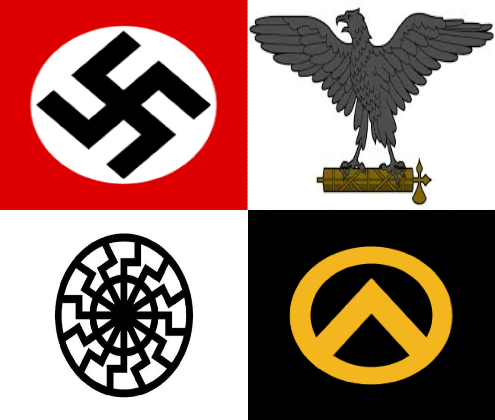

The modern far-right developed through radical nationalist and authoritarian movements during the 19th and early 20th centuries. Its influence grew significantly following World War I, when economic instability, political unrest and resentment towards existing governments created opportunities for extremist movements. In Italy, Benito Mussolini established Fascism and became dictator in 1922. In Germany, Adolf Hitler and the Nazi Party rose to power in 1933, establishing a totalitarian regime based on racial supremacy, extreme nationalism and antisemitism. Other authoritarian nationalist movements emerged throughout Europe, including Francoism in Spain. Following World War II, far-right politics evolved, with modern movements adopting different forms of nationalism and radical conservatism.
Core Ideologies and Beliefs
Core Ideologies and Beliefs
Fascism: An authoritarian ultranationalist ideology that emphasises national unity, hierarchy, militarism and the subordination of individual freedoms to the state or nation.
Nazism: A particularly extreme form of fascism that incorporated racial supremacy, antisemitism, biological racism and territorial expansionism.
Ultranationalism: An extreme form of nationalism that places the nation above other political or social considerations.
Ethnonationalism: Defines national identity primarily through shared ethnicity or ancestry rather than simply citizenship.

Political SymbolsHistorical Events
Political Positions
The far-right frequently advocates restrictive immigration policies, strong national sovereignty and the preservation of traditional cultural identities. Economically, its positions vary considerably, ranging from protectionist policies and state-directed industries to support for private enterprise. Historically, fascist movements maintained private ownership while placing significant economic activity under government control. Politically, many far-right movements favour strong centralised leadership, extensive security powers and strict law enforcement. Some participate in democratic elections, while others explicitly reject liberal democracy and advocate authoritarian government. Extreme movements have historically promoted racial discrimination, political repression and persecution of minorities.